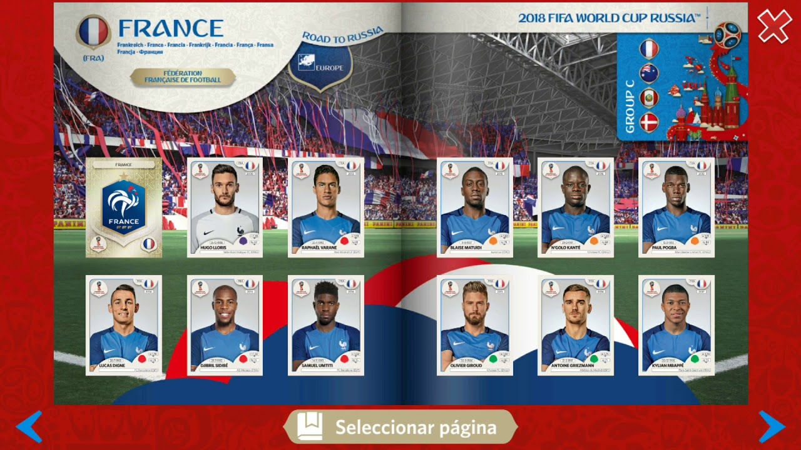

Contenidos | Anterior (2 NumPy) | Próximo (4 Gráficos del Arbolado porteño)
5.3 El album de Figuritas
Las figuritas del mundial
Esta es una adaptación de una actividad que diseñaron nuestres colegas de Exactas-Programa y amablemente nos dejaron usar aquí.
El objetivo de esta actividad es hacer un programa en Python que responda la pregunta: ¿Cuántas figuritas hay que comprar para completar el álbum del Mundial? Guardá todo lo que hagas en un archivo figuritas.py, te lo vamos a pedir al finalizar la clase.

Esta pregunta es noticia cada cuatro años: - Mundial de Brasil 2014 - Mundial de Rusia 2018 - Incluso hay un paper que salió referido en el diario
Datos:
- Álbum con 670 figuritas.
- Cada figurita se imprime en cantidades iguales y se distribuye aleatoriamente.
- Cada paquete trae cinco figuritas.
Vamos a utilizar este disparador para presentar conceptos clave.
Herramientas útiles de Python
Para que estén disponibles más funciones de Python, tenés que usar el comando import.
En particular, en esta actividad vamos a usar dos módulos:
- El módulo random lo vamos a importar con el comando import random y lo vamos a usar para generar figuritas (pseudo) aleatoriamente.
- El módulo numpy lo vamos a importar con el comando import numpy as np y lo vamos a usar para operar numéricamente.
El modelo del álbum de figuritas
Vamos a representar un álbum de n figuritas utilizando un vector de NumPy con posiciones numeradas de 0 a n-1. Cada posición representa el estado de una figurita con dos valores: 0 para indicar que aún no la conseguimos y 1 para indicar que sí (o, si preferís, podés usar un número positivo para representar cuántas de esas figus tenés, contando repes).
Por ejemplo, si tuviéramos un álbum de seis figuritas vacío lo vamos a representar como [0 0 0 0 0 0]. Cuando consigamos la figurita 3 tendremos que indicarlo poniendo un 1 en el tercer lugar de la lista, es decir album[2]=1 y el álbum nos va a quedar [0 0 1 0 0 0], y si queremos representar que nos tocó dos veces la figurita 3, asignamos album[2] += 1 y el álbum queda [0 0 2 0 0 0].
Primera simplificación
Suponé por ahora que las figuritas se compran individualmente (de a una, no en un paquete con cinco). En este caso, la dinámica del llenado es la siguiente:
- Iniciamos con un álbum vacío y sin haber comprado ninguna figurita.
- Compramos figuritas (de a una) hasta llenar el álbum; es decir, se repite la acción (el paso) de comprar y pegar figuritas mientras (while) el álbum está incompleto.
- Al terminar nos interesa saber cuántas figuritas tuvimos que comprar para llenar el álbum.
Ejercicios con figus sueltas
Vamos ahora a implementar computacionalmente este modelo. Queremos definir las funciones:
Ejercicio 5.10: Crear
Implementá la función crear_album(figus_total) que devuelve un álbum (vector) vacío con figus_total espacios para pegar figuritas.
Ejercicio 5.11: Incompleto
¿Cuál sería el comando de Python que nos dice si hay al menos un cero en el vector que representa el álbum? ¿Qué significa que haya al menos un cero en nuestro vector?
Implementá la función album_incompleto(A) que recibe un vector y devuelve True si el álbum A no está completo y False si está completo.
Esta función y la anterior son realmente sencillas --cada una puede escribirse en una sola línea. En otro contexto quizas podrías usar directamente esa línea y evitarte definir la función. Sin embargo, en esta etapa nos parece interesante que organices tu código definiendo estas funciones, por más que tengan línea de código cada una.
Ejercicio 5.12: Comprar
Alguna de las funciones que introdujimos en la Sección 5.1 sirve para devolver un número entero aleatorio dentro de un rango (¿cuál era?).
Implementá una función comprar_figu(figus_total) que reciba el número total de figuritas que tiene el álbum (dado por el parámetro figus_total) y devuelva un número entero aleatorio que representa la figurita que nos tocó.
Ejercicio 5.13: Cantidad de compras
Implementá la función cuantas_figus(figus_total) que, dado el tamaño del álbum (figus_total), genere un álbum nuevo, simule su llenado y devuelva la cantidad de figuritas que se debieron comprar para completarlo.
Ejercicio 5.14:
Ejecutá n_repeticiones = 1000 veces la función anterior utilizando figus_total = 6 y guardá en una lista los resultados obtenidos en cada repetición. Con los resultados obtenidos estimá cuántas figuritas hay que comprar, en promedio, para completar el álbum de seis figuritas.
Ayuda: El comando np.mean(l) devuelve el promedio de la lista l.
¿Podés crear esta lista usando una comprensión de listas?
Ejercicio 5.15:
Calculá n_repeticiones=100 veces la función cuantas_figus(figus_total=670) y guardá los resultados obtenidos en cada repetición en una lista.
Con los resultados obtenidos estimá cuántas figuritas hay que comprar, en promedio, para completar el álbum (de 670 figuritas).
Guardá todo lo que hiciste hasta aquí sobre figuritas en un archivo figuritas.py. Lo que sigue profundiza un poco más en el asunto.
Ahora con paquetes
Estos ejercicios te recomendamos que los pienses y discutas con un compañere o alguna de tus otras personalidades (si es que tenés):
- ¿Cómo impacta en lo realizado tener paquetes con figuritas en lugar de figus sueltas?
- ¿Cómo puede representarse un paquete?
Ejercicios con paquetes
Ejercicio 5.16:
Simulá la generación de un paquete con cinco figuritas, sabiendo que el álbum es de 670. Tené en cuenta que, como en la vida real, puede haber figuritas repetidas en un paquete.
Ejercicio 5.17:
Implementá una función comprar_paquete(figus_total, figus_paquete) que, dado el tamaño del álbum (figus_total) y la cantidad de figuritas por paquete (figus_paquete), genere un paquete (lista) de figuritas al azar.
Ejercicio 5.18:
Implementá una función cuantos_paquetes(figus_total, figus_paquete) que dado el tamaño del álbum y la cantidad de figus por paquete, genere un álbum nuevo, simule su llenado y devuelva cuántos paquetes se debieron comprar para completarlo.
Ejercicio 5.19:
Calculá n_repeticiones = 100 veces la función cuantos_paquetes, utilizando figus_total = 670, figus_paquete = 5. Guarda los resultados obtenidos en una lista y calculá su promedio. Si te da la compu, hacelo con 1000 repeticiones.
Graficar el llenado del álbum
El siguiente código usa las funciones que hiciste antes para graficar la curva de llenado de un álbum a medida que comprás paquetes de figuritas. Es un primer ejemplo de gráfico de líneas. En las próximas clases estudiaremos los detalles sobre gráficos de una manera sistemática. Por ahora solo un botón de muestra.
def calcular_historia_figus_pegadas(figus_total, figus_paquete):
album = crear_album(figus_total)
historia_figus_pegadas = [0]
while album_incompleto(album):
paquete = comprar_paquete(figus_total, figus_paquete)
while paquete:
album[paquete.pop()] = 1
figus_pegadas = (album>0).sum()
historia_figus_pegadas.append(figus_pegadas)
return historia_figus_pegadas
figus_total = 670
figus_paquete = 5
plt.plot(calcular_historia_figus_pegadas(figus_total, figus_paquete))
plt.xlabel("Cantidad de paquetes comprados.")
plt.ylabel("Cantidad de figuritas pegadas.")
plt.title("La curva de llenado se desacelera al final")
plt.show()
Ejercicios un toque más estadísticos:
Los siguientes ejercicios suponen algunos conceptos un poco más avanzados de estadística. Son optativos pero interesantes.
Ejercicio 5.20:
Utilizando lo implementado en el ítem anterior, estimá la probabilidad de completar el álbum con 850 paquetes o menos.
Sugerencia: No leas esto antes de hacer el ejercicio. Hacelo primero y luego miralo. En este ejercicio resulta más compacto usar n_paquetes_hasta_llenar=np.array(lista) para convertir a vector la lista conteniendo cuántos paquetes compraste en cada experimento hasta llenar el álbum. Trabajar con vectores tiene ventajas. Por ejemplo probá la siguiente instrucción:
(n_paquetes_hasta_llenar <= 850).sum()
Ejercicio 5.21: Plotear el histograma
Usá un código similar al del Ejercicio 5.9 para hacer un histograma de la cantidad de paquetes que se compraron en cada experimento, ajustando la cantidad de bins para que el gráfico se vea lo mejor posible.
Ejercicio 5.22:
Utilizando lo implementado, estimá cuántos paquetes habría que comprar para tener una chance del 90% de completar el álbum.
Ejercicio 5.23:
Repetí suponiendo que no hay figuritas repetidas en un paquete. ¿Cuánto cambian las probabilidades?
Ejercicio 5.24: Cooperar vs competir
Por último, suponé que cinco amigues se juntan y deciden compartir la compra de figuritas y el llenado de sus cinco álbumes solidariamente. Calculá cuántos paquetes deberían comprar si deben completar todos. Hacé 100 repeticiones y compará el resultado con la compra individual que calculaste antes.
Acordate de guardar todo lo que hiciste sobre figuritas en un archivo figuritas.py.
Contenidos | Anterior (2 NumPy) | Próximo (4 Gráficos del Arbolado porteño)